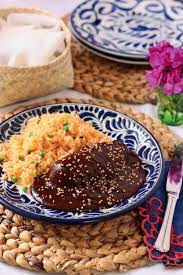

Mole

Description
This is the best chicken mole recipe. While this authentic Mexican recipe is made
with numerous ingredients, you can adapt the recipe to suit your own taste.
Ingredients:
- 1 whole chicken uncooked
- 8 chile guajillo, 8 pasilla, 8 ancho
- tomatillos
- tomatoes
- 8 Rtiz crackers
- 1 diced yellow onion
- 4 tablespoons sliced almonds
- 2 tablespoons pepitas
- 1/2 cup sesame seeds
- 4 cloves of garlic
- 2 cloves
- 1/2 tablet Mexican chocolate
- salt to taste
Steps:
- Cut the chicken into small pieces and boil in 9 cups of water.
- Dry roast ingredients in skillet.
- Add chiles, crackers, tomatillos, and spices to a blender with 4 cups of cooked
chicken broth and blend until smooth.
- Bring mixure to a simmer over medium heat and add chocolate.
- Add cooked chicken, redicue the heat, cover and let simmmer.